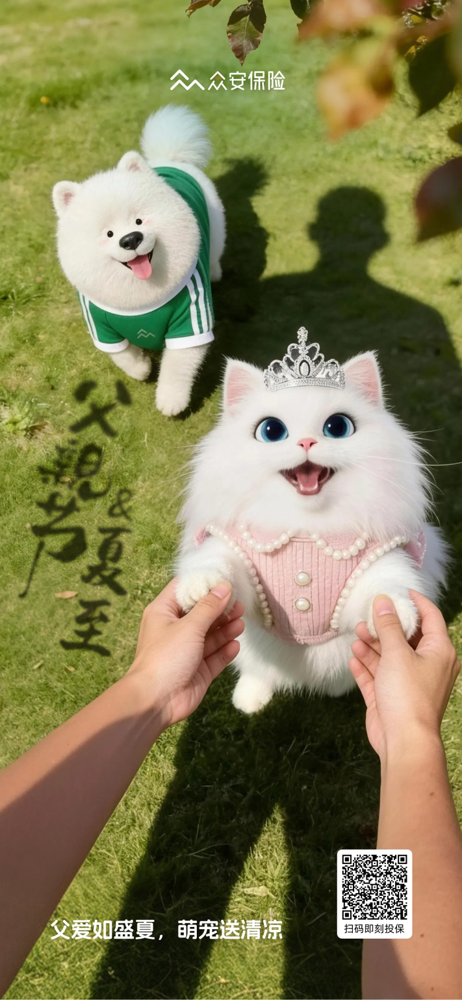
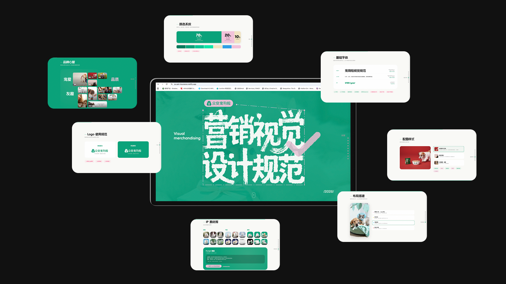
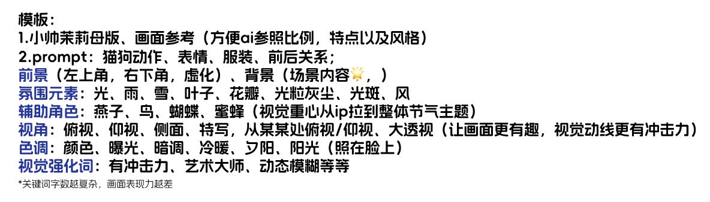
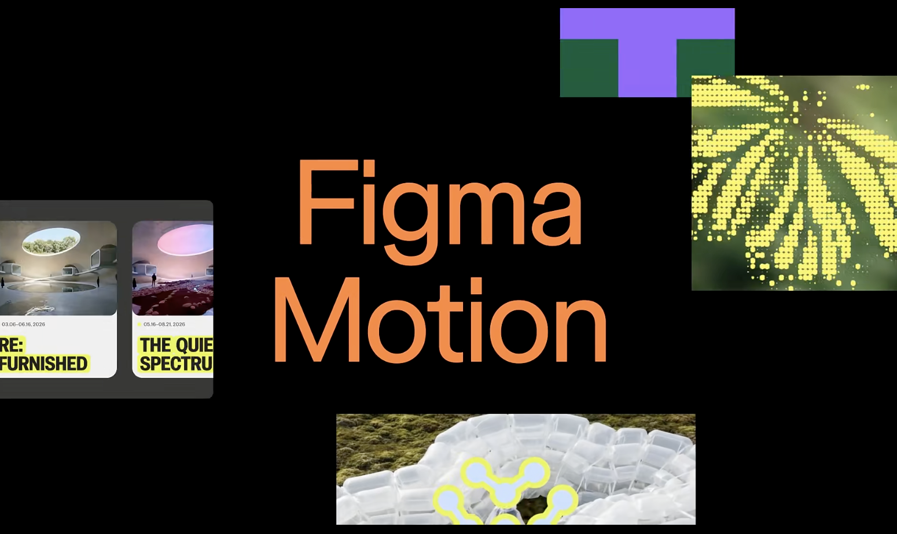
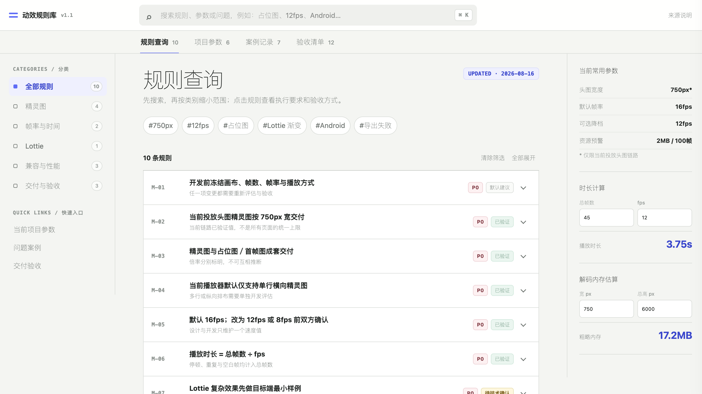

单独生图
从单点视觉生成开始。
生图流程拆解
从单点视觉生成开始。
静态画面扩展到时间和镜头。
Codex、Claude 开始处理代码、工具和完整任务。
视觉设计
 Codex / Claude代码、工具搭建与实现
Codex / Claude代码、工具搭建与实现先拆任务明确目标和环节
再做选择什么时候调用什么能力
让不同 AI 围绕同一个目标协作。色调是什么颜色关系？
光线什么样的光更有质感？
镜头什么视角更有冲击力？
比例主体在画面中占多少？
即使一句话或一张参考图已经能生成接近的结果，Prompt 仍然决定过程是否可控。
相比从零写一大段描述，一张合适的参考图可以一次对齐多个视觉维度，更快明确方向。
不要围绕一张图整体复刻。
多看几张 → 分别提取 → 重新组合参考图是沟通捷径，不是复制模板。
我喜欢的是构图，还是色彩？
光影是什么样的？
镜头是什么？
氛围是什么？
哪些元素是我真正想要的？
哪些只是参考图本身的内容？
{
"image_prompt": "以 json 格式描述这幅图，描述准确复刻原始图像所需的所有方面，包括主体、视角构图、风格、光线、图片比例、有关物品、服装、发型、复杂细节、配饰、摄影器材、环境、身体姿势以及任何其他相关元素的具体信息，确保能够精确地重现原始图像的每一个细节。",
"output": "要求输出 json 格式提示词，字数 750 字以内。",
"video_prompt": "同时以 json 格式给这幅图定制一个适配的视频提示词。"
}
从视觉侧探究 AI 如何提效

企微推送，从元旦开始到现在，持续产出 30+ 张


方便 AI 参照比例、特点以及风格。
动作、表情、服装、前后关系。
前景：左上角、右下角、虚化；背景：明确场景内容。
光、雨、雪、叶子、花瓣、光粒、灰尘、光斑、风；燕子、鸟、蝴蝶、蜜蜂，让视觉重心从 IP 拉到整体节气主题。
俯视、仰视、侧面、特写、从某处俯视或仰视、大透视；颜色、曝光、暗调、冷暖、夕阳、照在脸上的阳光；有冲击力、艺术大师、动态模糊。
结合节气文化与品牌亲和感；水、冰、雪、花、草、叶子等材质让标题真正融入画面。
项目基础：Logo / IP / 字体 / 品牌色 / 品牌调性 / 营销视觉规范
把可以规范化和自动化的环节连接起来。
让每一次生成，都基于同一套可复用的判断标准。
将品牌信息固化为长期可调用的规则，让系列产出始终保持一致识别。
Logo · IP · 字体 · 品牌色 · 品牌调性把节日节气的文化语义与产品调性、业务目标准确结合，不止停留在表面元素。
节气语义 × 产品调性 × 业务目标将重复环节沉淀为标准路径，减少沟通、试错与返工，提高整体产出效率。
调研 → 文案 → 创意 → 生图 → 合成稳定品牌 · 校准表达 · 规范产出，这就是工作流真正解决的问题。
让已经确定的视觉规则和经验，可以被 AI 重复调用。
画面和标题一起生成
字体风格知道了不要总想一次解决全部问题。图文拆开，文字的表现力和稳定性反而更好。
AI 收到新要求后，有时不会直接修改原规则，而是把整段纠错过程继续写进 Skill。
调整 Skill 时，让 AI 直接重写原要求，而不是继续增加否认命令。
删除重复、冲突和解释性内容，只保留最新、明确、可执行的规则。
维护 Skill，不是记录纠错历史；而是持续维护一份最新、最短、可执行的说明。
“用节气海报的 Skill，帮我做一张白露海报，要求露水与 IP 结合。”
重构 AI 视频产出
先把完整内容和目标整理清楚。
AI 处理后，再由人工修改和优化。
人物、宠物、场景和品牌信息。
AI 生成后，逐张人工检查和优化。
根据不同镜头选择合适模型。
声音继续围绕同一个内容目标。
把全部内容连接为完整视频。
内容是否准确表达脚本？
品牌是否符合品牌调性？
场景是否符合发布会环境？
处理不满意的画面先重新生成。
58 张分镜画面全部确认以后，才真正开始生成视频。
人物怎么动？运动方向是什么？
画面前后如何变化？
镜头怎么动、怎么转场、景别怎么变？
AI 结合脚本、分镜画面与基础设定，为每个镜头生成对应的视频 Prompt。
完整信息先统一：脚本、人物、场景、品牌调性与视觉方向。
后续内容基于已有信息，有目的地继续产出。
已有信息统一 → 有目的地产出 → 持续人工优化 → 完整视频更加统一 · 更加协调 · 效率更高 · 更贴近业务目标
AI 动效提效与协作
效果依赖工具熟练度、动效知识和个人经验。
AI 帮助寻找实现方式，并辅助生成和调整。
能力边界取决于自己接触过什么、记得什么。
连接更广的案例、技术方案和交付经验。

按钮、图标、状态动画等。
导出设计图层，在 AE 中重新制作，再通过插件导出。
Figma Motion AI 直接基于设计稿制作、调整并导出 Lottie，让设计稿、动效与交付尽量在同一个平台完成。
Lottie 对部分渐变、遮罩、复杂效果和低端机型兼容存在限制；复杂营销动画需要另一种交付方式。
AI 视频 / MP4 → AE 剪辑 → 抠图 → PNG 序列 → 精灵图合成 → 压缩 → 调试。
导入 AI 视频，在网页里完成简单剪辑、尺寸调整、帧率调整、精灵图生成、压缩和导出。
打开工具 ↗把重复操作集中到一个网页工具里，明显提升实际动效交付效率。

打开动效规则库 ↗个人经验、历史项目和聊天记录中反复出现的问题。
精灵图尺寸限制、帧率问题、Lottie 渐变 Bug、低端机型兼容，以及性能和交付问题。
让 AI 帮助查询，把个人经验变成团队可以复用的知识。
我把喜欢的视觉语言、动效方式和交互经验整理成一套 Skill。它适合宠物、活动和营销类项目，可以快速生成能够直接运行、继续调整的网页动效。
这份分享中的网页动效也来自这套 Skill，欢迎大家直接尝试。
自己的工作内核，也从单纯完成视觉，慢慢向更完整的体验设计延伸。
当设计、产品和技术共享更多工作流、工具与规则，协作也会更高效、更有意思。
THANKS
期待AI在我们之后的工作中，带来更多新的发展和变革